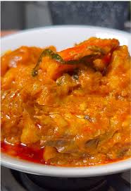

Ikokore

Description
Ikokore is a water yam pottage or porridge dish among the Yoruba people, popular among the Ijebus.
It is made from Dioscorea alata, called Isu Ewura(water yam) in Yoruba, grated and cooked with ingredients like peppers, onions, and spices. A lot of proteins are usually incorporated into Ikokore. Ikokore can be eaten on its own or served with cold eba
Ingredients
- Water yam
- Fish
- Pepper
- Ponmo
- Salt
- Onions
- Ogiri
- Crayfish
- Palm oil
Steps
- Prepare the Yam: Peel the water yam, wash, and grate it using the finest side of your grater. Season the yam paste with salt, a pinch of pepper, and a dash of ground crayfish. Mix until fluffy and set aside.
- Prepare the Broth: In a large pot, add water, palm oil, locust beans, and your blended pepper mix. Add your pre-cooked assorted meats, ponmo, and cleaned smoked fish. Season with salt. Let the mixture boil for 5-10 minutes.
- Scoop the Yam: Remove the meat and fish from the boiling broth and set them aside. Reduce the heat to medium-low, and use your hands or a spoon to drop the seasoned yam paste into the boiling liquid in small clumps (or balls).
- Simmer: Cover the pot and let the yam clumps cook without stirring for about 10 minutes, allowing them to firm up and float.
- Combine: Gently return the meat and fish into the pot. Add the rest of the crayfish and any extra palm oil if needed. Stir very carefully so you don't break the formed yam balls.
- Finish: Lower the heat and let it simmer for another 5-10 minutes until the palm oil is well integrated and the raw taste is gone.
Back To Odin-Recipes